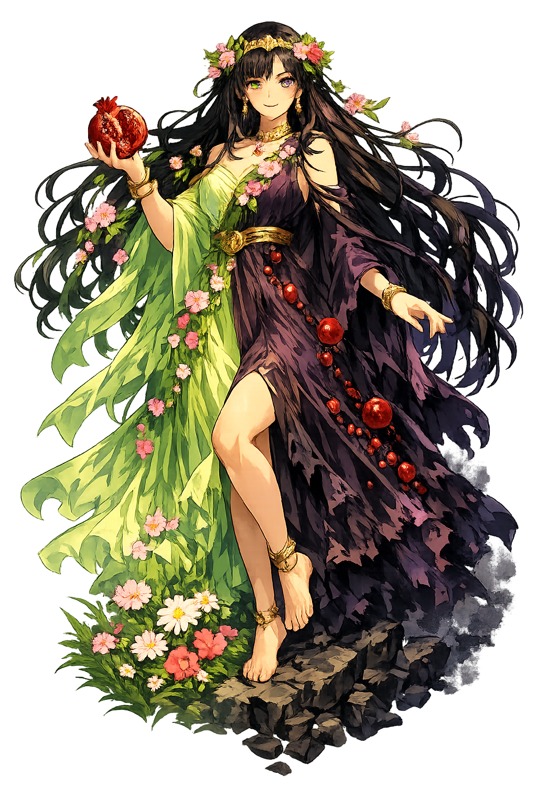

The Duality of Seasons
Queen of the Underworld · Goddess of Spring · Bringer of Seasons

Why Persephonē.com is the single correct restored form
Περσεφόνη
The name in its original Greek form. The acute on the ó — the pitch accent that falls on the third syllable like a footstep in soft earth. The long e that sustains at the end, like a held breath. In transliteration, the macron on e is preserved while the acute on the short vowel does not create a separate tier. A name that contains both bloom and burial.
persephone
Reduced to a search query. A character in a video game. A name whispered in high school mythology units. The Queen of the Dead who commands every soul in the underworld — reduced to ten uppercase letters in a database field. The pomegranate is gone. The throne is gone. Only the label remains.
persephone
The Greek Περσεφόνη carries an acute on the ε and a long ῆ at the end — both features present in the original. Because the Greek has both stress and length, persephone is Tier-1: the full scholarly orthography. The macron on e sustains at the end like a held breath. The PUNYCODEX owns the true name.
Persephonē.com → xn--persephon-jhb.com
The single non-ASCII character — e (U+0113) — encodes to a Punycode string. The acute on the short vowel does not create a separate valid tier. To the DNS, it is a unique domain. To humanity, it is the true name of the Queen of Seasons.
Where persephone stands in the PUNYCODEX elegant tier system
Persephonē is Tier 1 because the Greek original Περσεφόνη contains both stress and length, and there is only one historically valid Unicode restoration.
The Greek name carries the full prosodic signature: pitch accent and quantitative length together. There is no alternate accent position attested, no alternate vowel quantity supported by the manuscripts. The ASCII fallback persephone is a modern transliteration, not an ancient canonical form. Under the PUNYCODEX system, a name with both stress and length, and only one valid restoration, is unambiguously Tier 1.
How the Queen of Seasons was truly spoken
Domains, symbols, and the fruit that divided the year
persephone is the most divided of all the gods. She is not merely the goddess of one thing. She is the goddess of transition itself — the bloom that becomes the grave, the maiden who becomes the queen, the spring that must surrender to winter. She is life that has tasted death. Death that remembers life.
Not merely flowers — return. When persephone ascends from the underworld, the earth bursts into bloom. Demeter's joy becomes spring itself. Every narcissus, every barley shoot, every vine tendril is her footstep on the stairs of return. She is the reason winter ends.
She does not merely reside in Hades. She rules beside him. The dead address her as Queen. She judges souls. She grants passage to orpheus and denies it to others. She is more powerful in death than most gods are in life. The underworld is not her prison. It is her other throne.
Six seeds. Six months. The mathematics of grief and reunion. When she is above, it is spring and summer. When she is below, Demeter mourns and the world freezes. She is the axis on which the year turns. Every autumn leaf is a countdown. Every crocus is a homecoming.
The Eleusinian Mysteries were her cult — the most sacred rites in ancient Greece. Initiates who witnessed her mysteries were said to lose their fear of death. She is the goddess who bridges the two worlds and returns with knowledge. To know her is to no longer fear the dark.
Stories of abduction, transformation, and the price of eternity
In the meadows of Enna, the maiden Kore — daughter of Demeter and Zeus — gathered flowers with her companions. The earth split open. Hades emerged in his black chariot and seized her. She screamed — a scream so terrible that Hekate heard it from her cave, and the sun himself turned away. No one intervened. Zeus had given his silent consent. The earth closed over her. Spring ended in a single afternoon. Her mother did not yet know. The flowers she had dropped continued to bloom, ignorant that the girl who picked them would not return.
Demeter searched the earth for nine days, torch in hand, neither eating nor sleeping. She turned old men into lizards for lying about what they saw. She withered the crops of cities that refused her passage. Finally, Hekate led her to Helios, the sun, who sees everything. He told her the truth: Hades had taken her daughter with Zeus's blessing. Demeter's grief became rage, and her rage became winter. She refused to let anything grow until her daughter was returned. The gods began to starve. Mortals died. Zeus had no choice.
Zeus sent Hermes to retrieve her. Hades, cornered, offered persephone a pomegranate — the food of the dead. She had fasted through her grief, refusing all sustenance in the underworld. But the fruit was sweet, and she was starving, and Hades was kind in his own terrible way. She ate six seeds. The Moirai themselves witnessed it. A contract sealed with fruit cannot be broken. Because she had eaten the food of the dead, she was bound to return. Six months above. Six months below. Forever. The compromise that created the seasons.
Each spring, persephone ascends the great stairs from the underworld. The earth cracks with crocuses. Demeter weeps with joy, and her tears become rain. For six months, the world blooms. But each autumn, the pomegranate calls her back. The leaves fall. The earth hardens. Demeter mourns again. She is the only god who truly understands both worlds — not as visitor, but as sovereign. She does not resent her division. She has made it into power. She is Queen in winter. She is Maiden in spring. She is both, and therefore she is more than either.
Zeus has thunder. Hades has the dead. Demeter has the harvest. But persephone has both worlds. She does not stand at the threshold — she owns the rooms on either side of it. Queen in winter. Maiden in spring. Six seeds, six months, one eternal contract. She does not fear the dark because she rules it. She does not cling to the light because she knows it returns. She is the only god who truly understands both realms — not as visitor, not as guide, but as sovereign.
This is not a directory. This is a resurrection.
Enter the CodexSee how Persephone behaves in the PUNYCODEX Type Tool — with predictive autocomplete, character-by-character breakdown, and scholarly constraint validation.
persephone
→
Persephone
The many faces of Persephone across scripts and conventions.
Our active domain. Standard academic convention with macron on eta. The ideal form with acute on omicron was unavailable.
Persephonē.comFully accurate. Acute on omicron, macron on eta. Domain unavailable.
UnavailableModern English form.
Persephonē.com (taken)